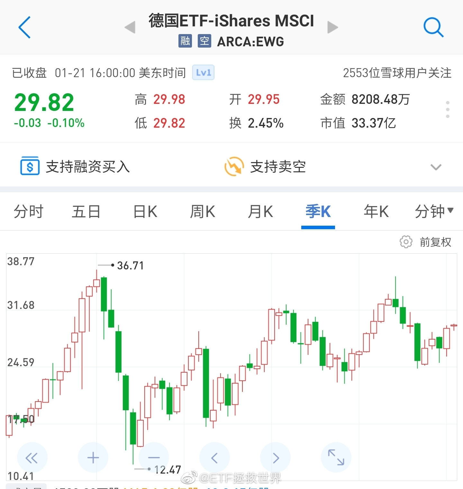

今天德国DAX历史新高。
很多朋友说我们买的德国30跟的不行。
确实没有完全跟上，我考虑有几个原因
第一，DAX是一个全收益指数，含股息，跟上它不容易。
第二，汇率问题。
第三，费率不低。
看下图，跟的不好不仅是A股的德国30，美股上市的EWG更差。
现在的问题是，市场上只有这一个跟踪欧洲的指数，不买它你也没的买。所以，希望以后有更丰富的品种吧。
很多朋友说我们买的德国30跟的不行。
确实没有完全跟上，我考虑有几个原因
第一，DAX是一个全收益指数，含股息，跟上它不容易。
第二，汇率问题。
第三，费率不低。
看下图，跟的不好不仅是A股的德国30，美股上市的EWG更差。
现在的问题是，市场上只有这一个跟踪欧洲的指数，不买它你也没的买。所以，希望以后有更丰富的品种吧。
- 